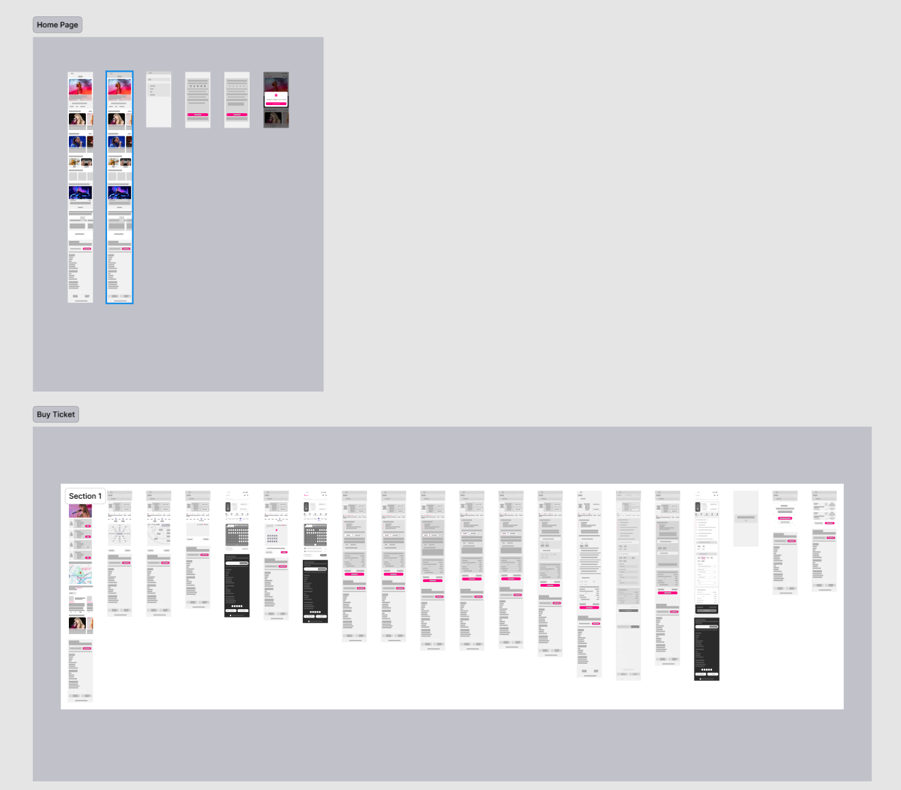
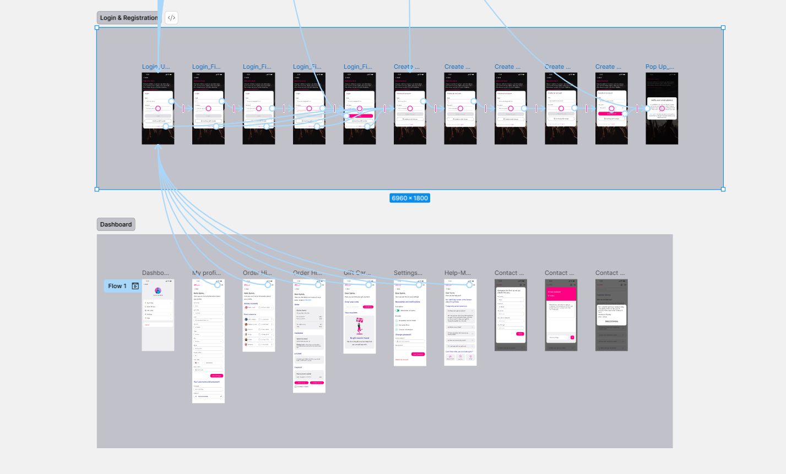

Online concert ticketing app
UX/UI Design — Final Project
VoGiaCu Team
2025
Design an online concert ticketing app with an optimized booking experience
Core flows: authentication, ticket browsing, seat selection, checkout, dashboard
Web application with responsive design for desktop and mobile
Figma, React Native, Python API, JavaScript
"Current ticketing platforms are often hard to navigate due to complex flows, unclear information, and fragmented payment experiences."
Current platform interfaces are not intuitive and often cause confusion
Lack of detailed event and seating information
Booking requires too many steps and takes too much time
Design-to-code handoff is slow and inconsistent across teams
Reduce booking steps from 7+ to 3-4 steps
Create an intuitive, easy-to-use interface with clear information
Keep design and engineering handoff clear across iterations
Ensure the app is accessible to all users
Collected booking frustrations, expectation patterns, and payment preferences
Explored where users slow down in search, seat selection, and checkout
Compared market flows to identify practical UX opportunities for BNConcert
Key Insight: Users need a shorter path from discovery to successful checkout with clearer information.
Analysis of 20 popular concert ticketing applications
Too many steps to complete booking, leading to cart abandonment
Not enough information about venue, seating map, and artists
Limited payment methods with no e-wallet support
Limited filters and no preference-based recommendations
Limited support for users with disabilities
No reminder system for upcoming events
"I want booking tickets to be fast, clear, and reliable."
Users browse events and compare what matches their interests
They review date, venue, ticket tiers, and event information quality
Seat map clarity determines confidence before users continue
This is the highest-friction point when forms or methods are unclear
Users need immediate ticket confirmation and clear next actions
Opportunity: Payment and confirmation clarity have the highest impact on completion rate.
Recommend concerts based on history and preferences
Book tickets in only 3 simple steps
Interactive 3D seating map
MoMo, ZaloPay, Visa, Mastercard, Banking
E-ticket with QR code for fast check-in
Share and invite friends to attend together

Low-fi prototype screenshot from early flow validation
Design System & UI Components — Figma Style Guide
Brand Colors
Primary Shades
State Colors
12 cols · 80px width · 24px gutter
6 cols · Auto width · 16px gutter

Prototype screenshot from current implementation
Ensuring the app is accessible for all users
Meets WCAG AA standards (contrast ratio ≥ 4.5:1)
Minimum font size of 12px, with 16px body text for readability
Minimum touch target of 44x44px on mobile
Full keyboard navigation support
// React Native (JavaScript)
export function TicketCard({ concert }) {
return <Pressable onPress={() => router.push(`/buy/${concert.id}`)} />;
}
# Python (FastAPI)
@app.get("/concerts")
def list_concerts():
return concert_service.get_public_concerts()
Rapidly drafts UI directions to speed up early product and visual exploration.
Bridges Figma designs to engineering context through node-aware design extraction.
Executes focused coding tasks and repo exploration to accelerate implementation.
Engineering and QA review AI outputs before integration and release.
This project is currently pre-production, so no public KPI or score is reported.
These AI tools support development workflow only, not runtime app functionality.Polish onboarding, seat selection cues, and checkout clarity
Expand React Native and Python modules with reusable implementation patterns
Automate lint, tests, API compatibility checks, and pre-release validation
Deploy with observability, rollback plans, and post-release improvement loops
Thank you, professors and classmates, for listening!
nhanhsb.22git@vku.udn.vn
BNConcert on Figma